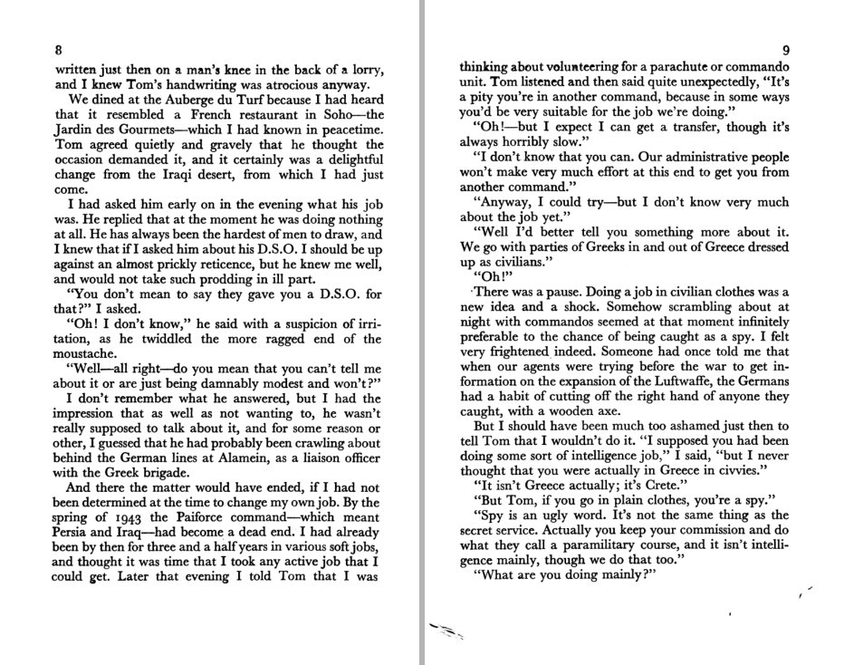
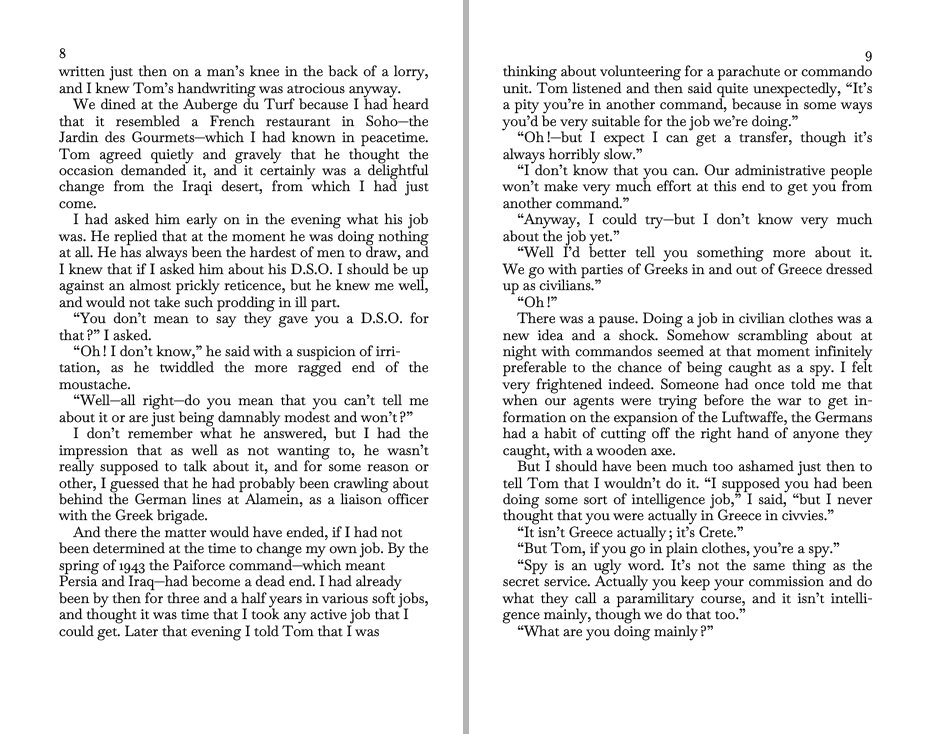
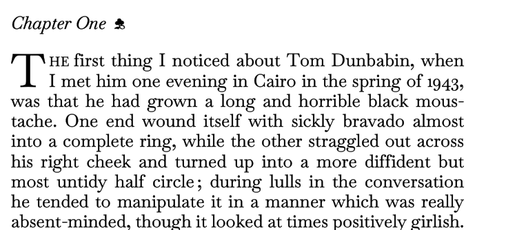
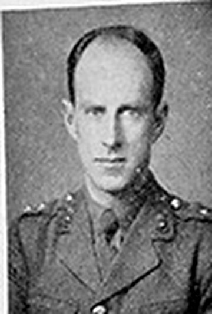
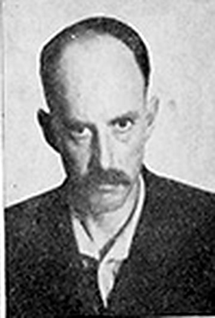
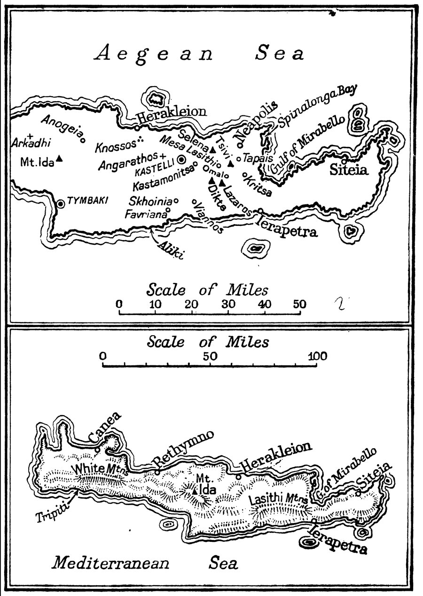

Dear Clare,
This page is for you. Everything you need is here in one place: the book itself as a print-ready file, a version for Kindles, the jacket, and a plain account of what was done and what is still uncertain. Nothing on this page is linked from the rest of my website, so only people with the address will find it.
Please read the section “Questions for you” when you have the book to hand, and send me anything you would change, however small. The final product should be exactly what you want. Further down there are also some thoughts on what might make the book an heirloom rather than a reprint: a foreword from the family, photographs, a who’s who for the grandchildren. Do pass them on to anyone who might have ideas or material.
Edmund
The three things you need
The book, for the printer
The complete text re-set exactly as in 1953: the same words on the same lines of the same pages, with the map endpaper, title pages and contents. This is the file a printer prints from.
Download the book (PDF)The Kindle edition
A clean reading edition with chapters, the maps and the dedication. Send it to a Kindle in a minute; instructions are below. Share the file with anyone in the family.
Download for Kindle (EPUB)The dust jacket
John Craxton’s jacket rebuilt from photographs, with the two portraits of Sandy and the publisher’s text on the back and flaps. It will be much better once we have a scan of a real jacket (see below).
Download the jacket (PDF)Also available further down: the maps as a separate sheet, the text as a Word document, a page-by-page proof against the original, and the full list of corrections.
Getting it onto a Kindle
Three ways, each takes about a minute
- On a computer: download the EPUB file above, go to amazon.co.uk/sendtokindle, sign in with the Amazon account the Kindle is registered to, and drag the file onto the page. It appears on the Kindle over Wi-Fi within a minute or two, under “Docs” in the library.
- On a phone or tablet with the Kindle app installed: open the EPUB attachment (from email or WhatsApp), tap Share, and choose Kindle.
- By email: attach the EPUB to an email to the Kindle’s own address (found on Amazon under Manage Your Content and Devices → Preferences → Personal Document Settings; the sender’s address must be on the approved list there).
To give it to the grandchildren, simply send them the EPUB file and this page’s address. Once on a Kindle it behaves like any other book: position, notes and highlights sync between devices. The old “.mobi” format is no longer accepted by Amazon, so the EPUB is the right file.
Questions for you, Clare
None of these stop the book being printed as it stands, but each one makes it more exactly the book you remember. Photographs from a phone are fine for everything except the jacket.
- The dust jacket. The single most useful thing. A flat scan of your jacket at 600 dpi (300 at minimum) on a flatbed scanner, including both flaps and the spine. Two overlapping halves are fine if they overlap by a few centimetres and are scanned at the same setting; I can stitch them. Robert’s complete copy would be better still. (The printer you first approached said a jacket in two halves was unusable; for me it is routine, as long as both halves are flat and scanned at the same setting.) If no scanner is to hand, a straight-on photograph in flat daylight with the jacket pressed under glass is a usable second best. This also gives us the two photographs of Sandy properly, and the back-flap text, which exists nowhere online.
- Measure the book with a ruler, in millimetres: the height and width of a page (not the cover), the height and width of the cover boards, and the thickness of the book at the spine including boards. The scan was cropped by the scanner, so the true page is probably a millimetre or two larger than the 130.5 × 207 mm I have used.
- The first and last leaves. Photographs of everything before the title page (the endpapers, any half-title page saying just “Appointment in Crete”, where the map is stuck down) and everything after page 240. The scan has blank pages where a half-title would normally be; I have included one, but I would like to know whether the original had it.
- The binding. A photograph of the spine and front of the bare book. Copies exist in brown and in green cloth with gilt lettering; if the new copies are to match yours, the binder will want to see it.
- One ordinary spread and one chapter opening, photographed straight on in daylight (for instance pages 8–9 and page 17), so I can check the darkness of the type and the colour of the paper against the scan.
- Three decisions, whenever you like:
- Misprints. The 1953 printing has 33 small misprints and inconsistencies (“witner” for winter, “pigeon Greek”, Vassili/Vasili). I have kept them exactly as printed, which is what a facsimile should do. Say if you would rather have the obvious ones quietly corrected.
- Printer’s marks. The small marks “2—A.I.C.”, “3—A.I.C.” at the foot of every sixteenth page are the printer’s binding guides. Kept for authenticity; easily removed.
- Typeface. The book is set in a free Baskerville very close to the original Monotype Baskerville. The genuine Monotype face can be bought for about £80–120 if you would like the last degree of exactness.
- Numbers. How many copies, and hardback with jacket, hardback without, or paperback? The printing guide has costs.
- An appendix? I can add sixteen pages at the back, set in the same type and clearly marked as not part of the original: the reviews that greeted the book in 1953 (The Sphere, The Spectator, the New Statesman and British Book News, with notices from the Annual Register and Washington’s World Affairs), the publisher’s description and biography from the jacket, a note of the historians who have drawn on the book since (Leigh Fermor, Beevor, Cooper, Stroud and others), and a summary of Sandy’s Times obituary of 1991. The Times and TLS reviews of July 1953 exist but could not be read online; a library with the Times archive would supply them. You can read all of it, with scans of the original magazine pages, on the “The book and its reviewers” page. Say if you would like it in the book, or would rather keep the book exactly as it was.
What has been done
The text: read twice by machine, then by eye against every page
The copy we had was a scan with a poor computer reading of the text behind it: about one error every sixty to a hundred words, worst in the Cretan names. The scan itself, happily, is excellent, at 600 dots per inch.
The pages were read again by a modern recognition engine, the two readings were compared line by line, and every one of the 238 scanned pages was then proofread against the page image. 1,166 changes were made and logged, and the 33 places where the 1953 printing itself is wrong were kept as printed and listed. The author’s spellings (Herakleion, Lasithi, sakkouli) and the book’s punctuation have been reproduced exactly, down to the printer’s habit of a thin space before question marks and exclamation marks.
The layout: the same book, page for page
Rather than re-flow the text and hope it comes out the same length, every page of the new book carries exactly the words of the corresponding page in the original, on the same lines, justified to the same width, on the same grid of 35 lines. Page 133 of the new book is page 133 of the old one. The chapter openings with their two-line capitals and small flower, the page numbers, the Byron verse on page 122, the tapering last paragraph and “FINIS” are all as they were. An automatic check lays each new page over its scan to catch any drift.



Open the page-by-page proof (47 MB: every page of the scan beside the new page).
The maps and the jacket
The two maps of Crete from the front endpaper were cleaned from the 600 dpi scan (specks removed, nothing redrawn) and are supplied both inside the book and as a separate sheet at the size of a page, so they can be stuck down on the endpaper as in the original.
The jacket was rebuilt from the best photographs of first editions that booksellers have put online. The front works well because Craxton’s design uses three flat printing colours (blue, yellow and black) that could be separated cleanly. The spine is re-lettered in a plain typeface because no photograph shows it flat; the two portraits of Sandy are soft because they come from a photograph of a photograph; and the continuation of the blurb on the back flap could not be found anywhere. A scan of a real jacket replaces all of this.



What the critics said in 1953
“A book that will not be easily forgotten,” said The Spectator; “this agreeable and impressive book,” said the New Statesman, adding that “a tendency to confuse cyanide pills with raisins made it a near thing.” The reviews from The Sphere, The Spectator, the New Statesman and British Book News, the publisher’s own description, the historians who have drawn on the book since, and Sandy’s Times obituary of 1991 are gathered on one page, each shown as the actual printed page from the magazine as well as in text.
Read the reviews and see the original pagesWhat could still be improved
In rough order of how much difference it makes
- Jacket from a real scan — spine lettering, sharp portraits, true colours, the missing back-flap text.
- Exact trim size and margins from measuring the book, so the printed copy is the same size in the hand.
- Half-title and endpapers confirmed from the family copy.
- Type colour. Letterpress printing on soft paper looks heavier than a modern print; the type has been thickened slightly to compensate, and a photograph of an original page will let me match it more closely.
- The genuine Monotype Baskerville typeface, if wanted (a purchase of about £80–120).
- Three doubtful readings that need a glance at the book: page 19 “had to help” (a tiny dot after “had”, judged a speck rather than a full stop), page 144 “of” (a broken letter in the printing), page 163 a faint comma after “brightly”.
- Binding to match (cloth colour, gilt spine lettering) once we know what yours looks like.
Printing it: options and costs
I have put together a full guide: who can print and bind the book in the UK (with websites, phone numbers and addresses), what they charge, what their customers say about them, the exact specification to send for a quote, and what to check before ordering. In short: three printers can make a cloth-bound, gold-lettered, jacketed book like the original for roughly £15–25 a copy at twenty copies; a jacketed hardback with a printed cover costs about £8–12; a paperback £4–5.
Open the printing guideAll the files
Everything, with what each one is for
| AppointmentInCrete_facsimile.pdf | The book for the printer, 241 pages at trim size, fonts embedded. 1.6 MB |
| AppointmentInCrete_facsimile_with_appendix.pdf | The same book with an optional sixteen-page appendix at the back: the 1953 reviews, the jacket text, later references and the 1991 obituary (257 pages). 1.7 MB |
| appendix.html | The appendix material online: the 1953 reviews as text and as scans of the original pages, the jacket text, later histories, the 1991 obituary. |
| appendix_reviews.pdf | The sixteen appendix pages on their own. 0.1 MB |
| ideas.html | Ideas for making the book an heirloom: foreword, family photographs and papers, who’s who, design touches, and how to send material. |
| printing.html | The printing guide: printers, contact details, costs, reviews, specification and checklist. |
| AppointmentInCrete.epub | Kindle / e-reader edition. 0.7 MB |
| jacket.pdf | Dust jacket, first version, 460 × 219 mm including 3 mm bleed, 22 mm spine, 76 mm flaps. 4 MB |
| map_endpaper.pdf | The two maps as one sheet at page size, for the endpaper. 0.4 MB |
| AppointmentInCrete_text.docx | The corrected text as a Word document, for anyone who wants to quote or search it. 0.2 MB |
| proof_side_by_side.pdf | Every page of the 1953 scan beside the new page, for checking. 47 MB |
| corrections.html | Every change made to the machine-read text, page by page, and the misprints found in the original. |
| plan.html | The working plan: measurements of the original, research notes, printing research, open questions. |
A note on copyright
Who owns the book, and what that means for printing and for this page
Sandy died in 1991, so under UK law his text remains in copyright until the end of 2061. The copyright belongs to his estate, that is to his heirs, unless he assigned it to the publisher; Allan Wingate ceased trading in the 1960s, and if it is not clear from his papers whether the rights were assigned or merely licensed, the family is the only party with a realistic claim. Printing copies for the family and sharing this page among the family are the kind of thing the owner of a copyright is entitled to do. If anyone in the family has papers from the publisher, they would settle the question.
The jacket design is John Craxton’s (he died in 2009) and is in copyright until 2079, held by his estate. Reproducing it on a handful of family copies is the sort of use an estate is normally glad to allow, and a short courtesy note to the Craxton Estate would be a kind thing to send if the jacket is reprinted. The two photographs on the jacket are of unknown authorship and were published in 1953; their copyright has expired.
This page is unlisted and marked so that search engines do not index it. It should stay a page for the family rather than a public edition.
Making it an heirloom
The book can be printed exactly as it stands. But a few additions, set in the same type and kept outside the 1953 text, would make it a gift rather than a reprint: a short foreword by the family; photographs and papers that only the family has (Sandy in Crete, the original jacket portraits, letters home, the cloak if it survived); a one-page who’s who and a modern map for grandchildren who were not alive in 1943; a numbered copy with each recipient’s name. The ideas, with how to send material, are on their own page. Please forward it to anyone who might have something to add.
Read the ideas and how to contributeWhat happens next
- You read this page and look at the book PDF (any page, against your copy of the original).
- You send me the jacket scan, the measurements and the photographs from “Questions for you”, and your answers on misprints, printer’s marks and typeface. Any order, any time.
- You pass the ideas page to the family and to anyone who knew Sandy, and anything that comes back (a foreword, photographs, letters, memories) goes into the book and onto this site.
- I update the files, finish the jacket properly, and we choose a printer together; I prepare the files to their templates and we order a single proof copy first.
- When the proof is right, the run is printed and bound. Extra copies later are easy.
Please send me any suggestion at all, however small: a word you remember differently, a page that looks wrong, a preference about the binding. The point of this is that the book should be the one you want to give.